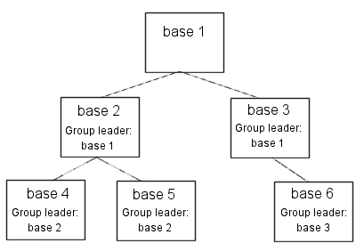

Using widgets, you can create IDL applications with graphical user interfaces. Although widget applications are running “inside” IDL, a well-designed program can behave and appear just like a stand-alone application.
While a simple application may consist of a single widget hierarchy headed by a single top-level base widget, more complex applications can include multiple widget hierarchies, each with their own top-level base. Widget applications that include multiple widget hierarchies consist of a group of top-level base widgets organized hierarchically. The individual widgets that make up the widget application’s interface have as their parent widget either one of the top-level bases or a base that is a child of one of the top-level bases.
Groups of widgets are defined by setting the GROUP_LEADER keyword when creating the widget. Group membership controls how and when widgets are iconized, which layer they appear in, and when they are destroyed.
The figure below depicts a widget application group hierarchy consisting of six top-level bases in three groups: base 1 leads all six bases, base 2 leads bases 4 and 5, and base 3 leads base 6. What does this mean? Operations like inconization or destruction that affect base 2 also affect bases 4 and 5. Operations that affect base 3 also affect base 6. Operations that affect base 1 affect all six bases—that is, a group includes not only those bases that explicitly claim one base as their leader, but also all bases led by those member bases.
|
 |
The following IDL commands would create this hierarchy:
base1 = WIDGET_BASE()
base2 = WIDGET_BASE(GROUP_LEADER=base1)
base3 = WIDGET_BASE(GROUP_LEADER=base1)
base4 = WIDGET_BASE(GROUP_LEADER=base2)
base5 = WIDGET_BASE(GROUP_LEADER=base2)
base6 = WIDGET_BASE(GROUP_LEADER=base3)
Groups of widgets are displayed and destroyed according to the following principles:
Bases and groups of bases can be iconized (or minimized ) by clicking the system minimize control. When a group leader is iconized, all members of the group are minimized as well.
Layering is the process by which groups of widgets seem to share the same plane on the display screen. Within a layer on the screen, widgets have a Z-order , or front-to-back order, that defines which widgets appear to be on top of other widgets.
All widgets within a group hierarchy share the same layer—that is, when one group member has the input focus, all members of the group hierarchy are displayed in a layer that appears in front of all other groups or applications. Within the layer, the widgets can have an arbitrary Z-order, determined by the programmer.
When a group leader widget is destroyed, either programmatically or by clicking on the system “close” button, all members of the group are destroyed as well.
See Iconizing, Layering, and Destroying Groups of Top-Level Bases under WIDGET_BASE for detailed information on how group membership defines widget behavior on different platforms.
On Microsoft Windows platforms, if the group leader has the BITMAP keyword set, the same titlebar icon is used for all group members. (Titlebar icons are not supported on Motif platforms.)
Top-level base widgets created with the FLOATING keyword set will float above their group leaders, even though they share the same layer. Floating bases and their group leaders are iconized in a single icon (on platforms where iconization is possible). Floating bases are destroyed when their group leaders are destroyed.
Top-level base widgets created with the MODAL keyword will float above their group leaders, and will suspend processing in the widget application until they are dismissed. ( Dialogs are generally modal.) Modal bases cannot be iconized, and on some platforms other bases cannot be moved or iconized while the modal dialog is present. Modal bases cannot have scroll bars or menubars.
Widget applications can have an application-specific menubar, created by the MBAR keyword to WIDGET_BASE. Menus and menubars are discussed in detail in Creating Menus .